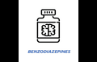

As Bases Farmacológicas da Terapêutica de Goodman & Gilman — O que é: O livro-texto padrão-ouro utilizado em faculdades de medicina e farmácia para explicar receptores e mecanismos biológicos.
Farmacologia Básica e Clínica (Bertram G. Katzung) — O que é: Manual clínico detalhado focado em dosagens, tempo de ação no organismo (farmacocinética) e efeitos colaterais das classes de medicamentos.
Portaria SVS/MS nº 344, de 12 de maio de 1998 — O que é: A norma oficial do Ministério da Saúde e da ANVISA que dita as regras sobre medicamentos que causam dependência (como os tarja-preta) no Brasil.
Diagnóstico e Estatístico de Transtornos Mentais (DSM-5) — O que é: O guia oficial publicado pela Associação Americana de Psiquiatria (APA) usado mundialmente por médicos para diagnosticar transtornos de ansiedade, crises de pânico e quadros relacionados à dependência e abstinência química.